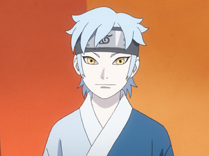

Mitsuki

Mitsuki is a fictional character created by manga artist Masashi Kishimoto. He was first introduced in being portrayed as a transfer student attending classes in Konohagakure to become a ninja. Mitsuki has become a ninja on a team with protagonist Boruto Uzumaki and Sarada Uchiha, Boruto: Naruto Next Generations, which shows how he became friends with Boruto while facing different enemies. A one-shot by Kishimoto reveals that Mitsuki is an experiment created by the Legendary Sannin and former enemy of Naruto, Orochimaru, who allowed him to take his own path in life.
Mitsuki
Boruto
Boruto Uzumaki , originally is a fictional character created by manga author Masashi Kishimoto who first appears in the finale of the manga series Naruto as the son of the protagonist Naruto Uzumaki and Hinata Uzumaki. He later appears as the main protagonist in the 2015 anime film Boruto: Naruto the Movie where he is training as a ninja to surpass his father, the leader of the ninja village Konohagakure and also being mentored by his father's best friend and rival, Sasuke Uchiha. Boruto also serves as a protagonist in the anime series Boruto: Naruto Next Generations. In the ninja academy where he meets his future teammates—Sarada Uchiha and Mitsuki—as well as his teacher, Konohamaru Sarutobi
Boruto
Sarada

Sarada Uchiha is a fictional character in the Naruto manga by Masashi Kishimoto. Introduced in the last chapter of the manga, she becomes the protagonist of the spin-off Naruto: The Seventh Hokage and the Scarlet Spring (2015).A young ninja in training, Sarada is the daughter of Sasuke and Sakura Uchiha.Her character is first explored in the film Boruto: Naruto the Movie (2015), where she has become a low-ranking ninja (Genin) from the village of Konohagakure and dreams of becoming its leader, the Hokage
Sarada